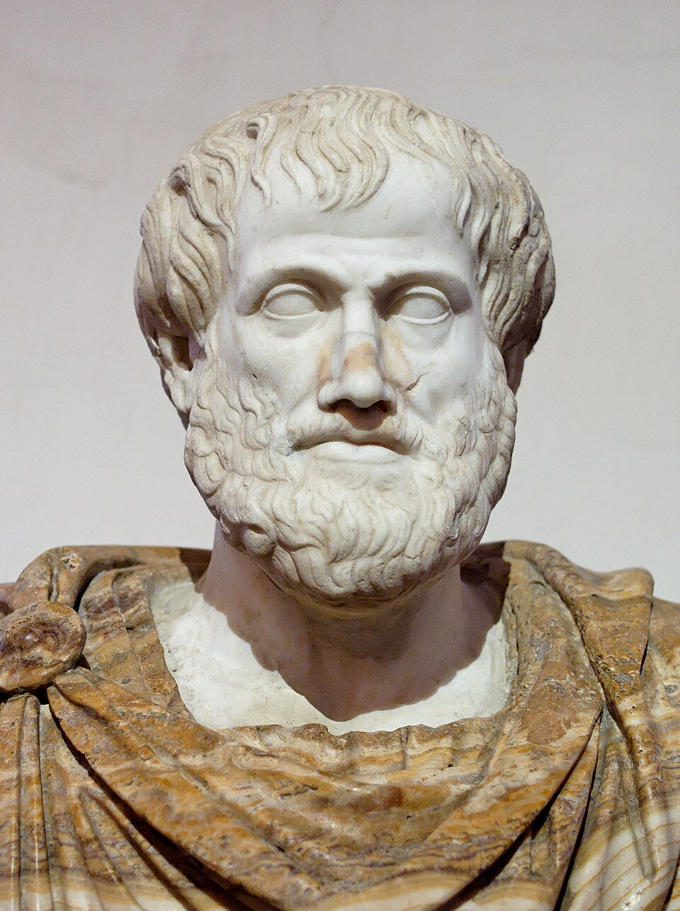
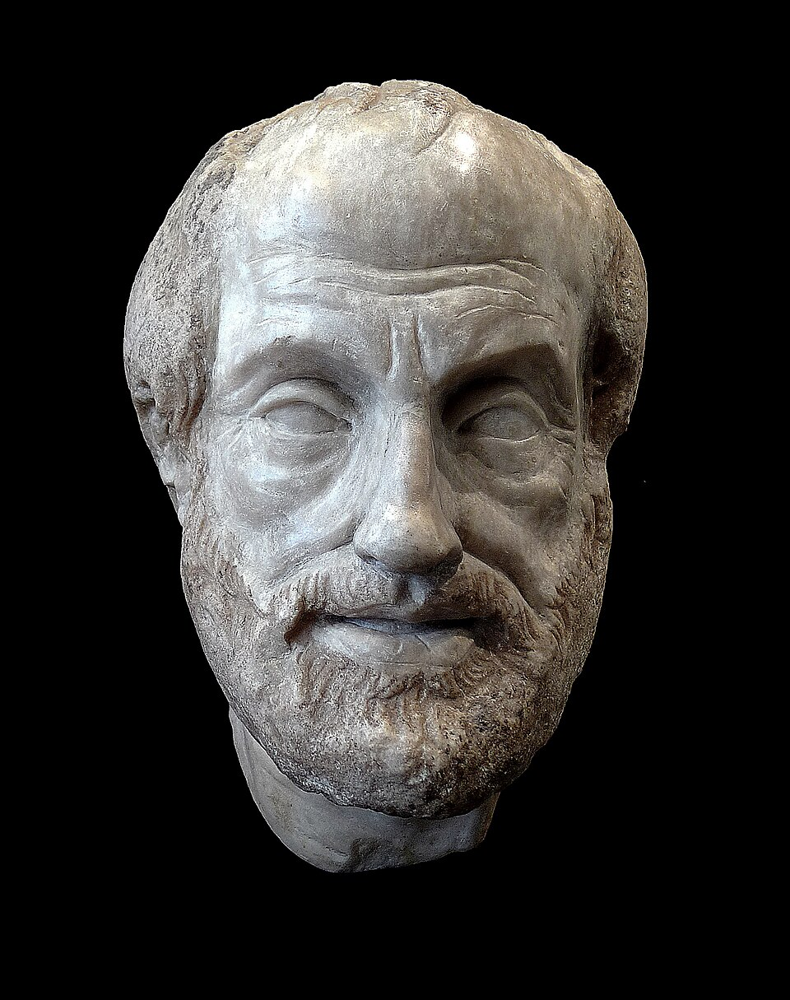
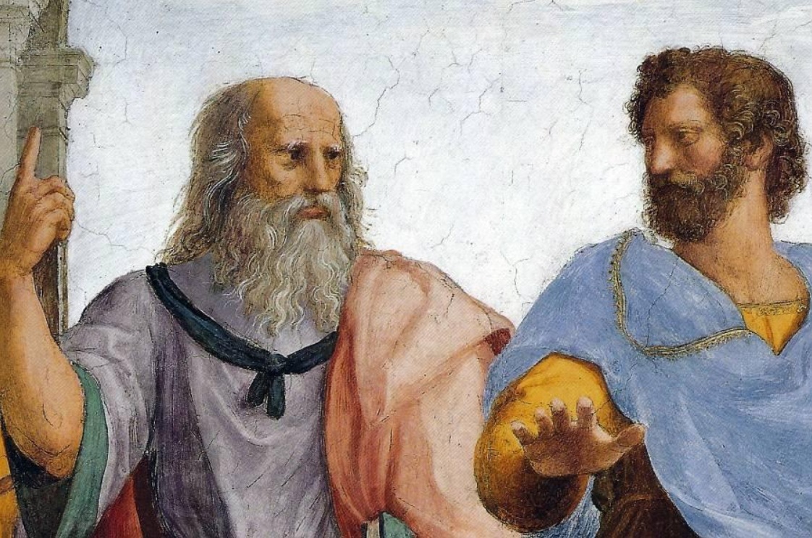
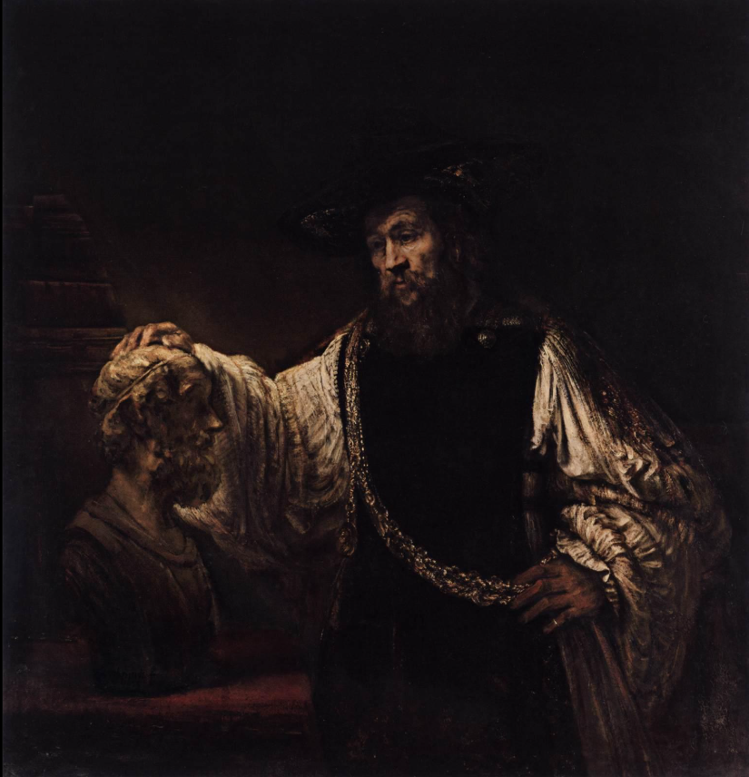
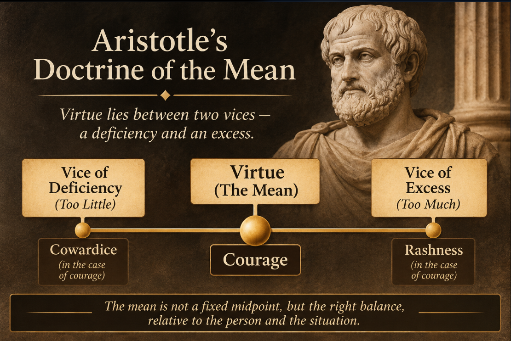
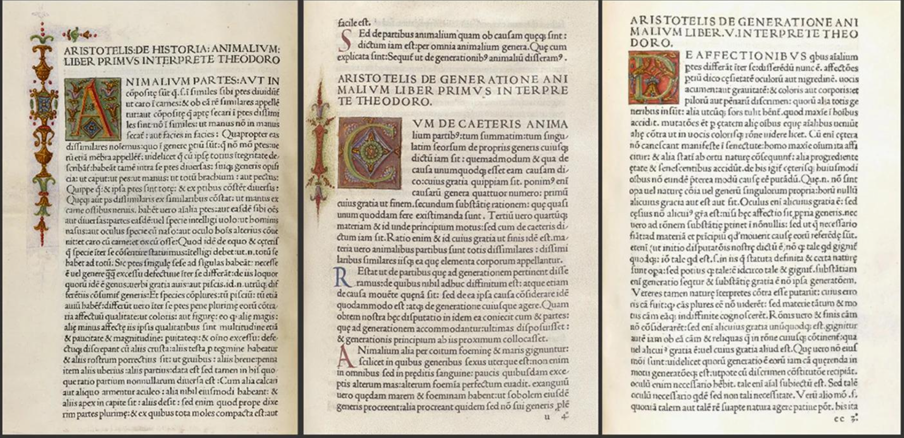
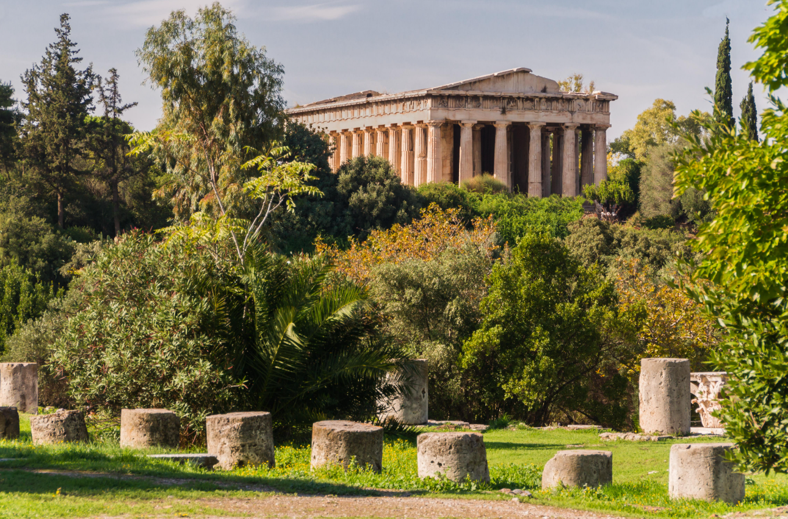

Aristotle (384–322 BCE) was an ancient Greek philosopher and polymath
who studied under Plato, tutored the young Alexander of Macedon, and
founded the Lyceum in Athens. His writings on logic, ethics,
metaphysics, politics, nature, rhetoric and poetry set the agenda for
philosophy and science for more than two thousand years, and many of
his questions are still being argued over today.[1]
Who Was Aristotle?

Aristotle lived during the fourth century BCE and became one of
the central figures of Classical Greek philosophy.
Aristotle was an ancient Greek philosopher born in 384 BCE in
Stagira, northern Greece, and died in 322 BCE at Chalcis in 322 BCE.
He was a student of Plato, spent about twenty years at Plato's
Academy, and later founded his own school, the Lyceum. His surviving
works cover a wide range of subjects, including logic, metaphysics,
ethics, politics, psychology, biology, rhetoric and poetics.[1][2]
Very few thinkers have worked across so many fields, and fewer still
have had so much of their work survive.
What ties the material together is a habit of mind more than a
single doctrine. Aristotle keeps asking what things are, why they
are the way they are, and what it would take to understand them
properly. He starts from what appears to be the case and from what
thoughtful people already believe, sorts out the puzzles, and builds
explanations from there. That method, and the vocabulary it produced
(substance, form, cause, virtue, syllogism), shaped Greek, Islamic,
Jewish and Christian philosophy for centuries.
It helps to picture how unusual this was. Before Aristotle, Greek
thinkers had offered bold pictures of the world: everything is
water, everything flows, everything is number. Aristotle's
contribution was less a new slogan than a new way of working. He
wanted definitions that could be tested, arguments whose steps could
be checked, and observations gathered before the theory was
announced. Open almost any page of his surviving work and you will
find him weighing what earlier thinkers said, pointing out where
they went wrong, and then trying to do better.
Many of his conclusions about the natural world have since been
revised or rejected, and some of his social views, on slavery and
the status of women in particular, are indefensible by modern
standards. Even so, his questions about how to live, how to reason
and what exists remain live ones. The sections below follow his
life, his major works, his main ideas, and the long history of how
his writings were read.
Nicomachean Ethics, Politics,
Metaphysics, Physics, De Anima,
Poetics, Rhetoric, the Organon
Key ideas
Eudaimonia, virtue, the golden mean, four causes,
hylomorphism, actuality and potentiality, the syllogism
Aristotle's Life and Historical Context
Also read:
Explore Ancient GreeceAncient Greek philosophy is the tradition of
inquiry, from the Pre-Socratics to Socrates, Plato and
Aristotle, that first asked systematically about nature,
knowledge, ethics and politics.
Read article →
Aristotle is better documented than many ancient philosophers, but
his biography still depends partly on later sources, particularly
Diogenes Laertius. As a result, some details of his life are well
established, while others belong more to biographical tradition than
to certain history.[12][18]
The broad outline, however, is clear: he was born in Stagira,
studied in Athens, travelled through Asia Minor, spent time in
Macedon, returned to Athens to establish the Lyceum, and eventually
left the city shortly before his death.
His lifetime also coincided with a major transformation in the Greek
world. Aristotle was born when independent city-states such as
Athens still played a central role in Greek political life. By the
end of his life, Macedon had become the dominant military and
political power under Philip II and Alexander the Great. This
changing world provides an important background to his thought. His
discussions of citizenship, constitutions and the purpose of
political communities were not written in a period untouched by
political upheaval. They emerged at a time when the traditional
independence of the Greek polis was increasingly under pressure.
Early Life in Stagira

Roman marble bust of Aristotle. Portraits like this are later
copies of lost Greek originals, so they show how antiquity
remembered him rather than a documented likeness.
Aristotle was born in 384 BCE in Stagira, a Greek city in
Chalcidice, in the northern Aegean region. His father, Nicomachus,
was a physician associated with the court of Amyntas III, king of
Macedon, while his mother's name was Phaestis. Aristotle's family
background placed him in contact with both Greek intellectual
culture and the political world of the Macedonian court. His father
is traditionally believed to have died while Aristotle was still
young, and the details of his upbringing remain uncertain. We cannot
reconstruct much about his childhood with confidence, but his early
connection to a medical household is worth keeping in mind when
considering the direction of his later investigations.
[12]
Medicine in the ancient world required close attention to the human
body, its organs, symptoms and the effects of different treatments.
Aristotle would eventually devote considerable effort to studying
living organisms, examining their structures and trying to
understand the purposes served by their different parts. It would be
too much to claim that his father's profession directly produced
Aristotle's interest in biology; the available evidence cannot
establish such a connection. Still, it is an interesting part of his
background. Unlike philosophers who approached nature mainly through
broad speculation, Aristotle repeatedly returned to observation,
comparison and the examination of particular things. That
combination of practical attention and philosophical reasoning
became one of the most distinctive features of his work.
Student at Plato's Academy
At around seventeen or eighteen, Aristotle travelled to Athens and
joined Plato's Academy, one of the most important centres of
philosophical learning in the Greek world. He remained there for
approximately twenty years, becoming deeply involved in the
intellectual life of the school. Under Plato, he encountered
questions about the nature of reality, knowledge, virtue, justice
and the proper organisation of political life. These were not
subjects he simply left behind when he developed his own philosophy.
They remained central to his work, although he often reached
conclusions very different from those of his teacher.
Plato's influence can be seen throughout
Aristotle's writings, even where Aristotle is most critical of
Platonic ideas.
The length of his stay is important because Aristotle's
disagreements with Plato were not the result of a brief encounter or
a superficial understanding of his philosophy. He had spent decades
engaging with the Academy's arguments and knew the problems of
Platonic thought from within. One major disagreement concerned
Plato's theory of Forms, which treated universal realities as
existing independently of the particular things we encounter through
our senses. Aristotle questioned whether separating Forms from
individual objects actually helped explain the world. For him,
understanding something required examining the thing itself,
including its matter, form, causes and development. His later
philosophy grew partly out of this attempt to address problems
inherited from Plato without accepting all of Plato's answers.

Detail from Raphael's The School of Athens (c.
1509–1511). Plato points upward, Aristotle gestures outward with
an open hand, a visual shorthand for the contrast between them. It
is a Renaissance interpretation, not an ancient portrait.
Years Away from Athens
After Plato's death in 348 or 347 BCE, Aristotle left Athens. He
travelled to Assos in Asia Minor, where he joined a circle
associated with Hermias, the ruler of Atarneus. During this period,
he worked alongside other philosophers connected with the Academy
and later married Pythias, who was associated with Hermias's
household. He subsequently travelled to the island of Lesbos, where
he continued his investigations into the natural world. These years
marked an important stage in his intellectual life. Away from Athens
and the immediate environment of the Academy, his research
increasingly involved the direct study of living organisms,
particularly marine animals and their physical structures.[13]
His biological writings reveal just how seriously he took these
investigations. Aristotle compared different species, examined their
organs and reproductive processes, and tried to understand how their
physical structures related to the ways they lived. Some of his
observations were remarkably detailed, while others were limited by
the methods and knowledge available in antiquity. What matters is
the approach: rather than treating nature as a subject that could be
explained entirely through abstract principles, he believed that
careful examination of particular living things was necessary before
broader conclusions could be reached. His time away from Athens
therefore helped shape a research programme that would become one of
the most extensive parts of his philosophical work.
Did Aristotle Teach Alexander the Great?
One of the most famous episodes in Aristotle's life is his reported
appointment as the tutor of Alexander, the son of Philip II of
Macedon. Around 343 BCE, Philip is traditionally said to have
invited Aristotle to educate the young prince, who was then about
thirteen years old. Most historians accept that Aristotle had some
role in Alexander's education, although the surviving accounts do
not allow us to establish exactly how long the arrangement lasted or
what subjects were taught. Later writers associated Aristotle with
Alexander's introduction to Greek literature, particularly Homer's
Iliad, but the details of their educational relationship
remain difficult to verify.A
It is tempting to draw a direct line between Aristotle's teaching
and Alexander's later achievements, but that would give the
relationship more certainty than the evidence allows. Alexander's
military campaigns and political decisions were shaped by his
upbringing, ambitions, military experience and the circumstances of
his reign. We have no reliable basis for claiming that Aristotle
designed Alexander's imperial vision or that the two men shared the
same political outlook. In fact, there is an interesting contrast
between them. Aristotle's Politics examines the polis as a
community in which citizens participate in governing and pursuing a
good life, whereas Alexander's conquests extended Macedonian power
across an enormous territory. The world created by Alexander was
very different from the independent city-state that occupied so much
of Aristotle's political thinking. Whether the two ever discussed
this difference is unknown, but their association remains one of the
more striking intersections between philosophy and political history
in ancient Greece.
The Lyceum and the Peripatetics
Around 335 BCE, Aristotle returned to Athens and established his own
philosophical school at the Lyceum, a public area associated with
Apollo Lykeios. Unlike the Academy, which had been shaped by Plato's
particular intellectual tradition, the Lyceum became the centre of
Aristotle's own wide-ranging investigations. Its activities extended
far beyond ethics and metaphysics. Aristotle and his associates
studied animals, examined political constitutions, collected
historical information and considered the arguments of earlier
thinkers. The school brought together subjects that are now treated
as separate academic disciplines, reflecting Aristotle's belief that
understanding the world required investigating it from several
different directions.
B
The Lyceum is especially interesting because of the collaborative
nature of its work. Aristotle's surviving writings cover an
extraordinary range of subjects, but the research associated with
the school could not have been carried out by one person alone. His
associates gathered information, compared evidence and contributed
to investigations that extended beyond the interests of any single
philosopher. The followers of Aristotle later became known as the
Peripatetics, a name traditionally associated with teaching or
discussion while walking. After Aristotle's death, the school
continued under Theophrastus, his student and successor, who made
important contributions to philosophy and the study of plants. The
Lyceum thus became more than the personal school of one thinker; it
developed into an intellectual tradition that preserved and extended
his approach to systematic inquiry.
Final Years and Death
Aristotle's final years were shaped by the political tensions
between Athens and Macedon. When Alexander the Great died in 323
BCE, anti-Macedonian feeling intensified across Athens. Aristotle's
association with the Macedonian court made his position increasingly
uncomfortable, and he left the city for Chalcis on the island of
Euboea. Ancient biographical accounts connect his departure with a
charge of impiety, although the political atmosphere surrounding
Macedonian influence is an important part of understanding why he
may have felt unsafe in Athens. He died in Chalcis in 322 BCE, at
the age of approximately sixty-two.
[18]
A famous story from later biographical tradition attributes to
Aristotle the remark that he did not wish Athens to sin twice
against philosophy, an apparent reference to the execution of
Socrates in 399 BCE. There is no reliable evidence that he actually
said these words, so the quotation is better understood as a later
story about his departure than as a verified statement.
Nevertheless, its survival says something about how later
generations understood Aristotle's final years. His life had been
closely connected with Athens, yet political circumstances
eventually drove him away. His departure also offers a fitting
reminder of a recurring tension in ancient Greek philosophy:
thinkers could devote their lives to questions of truth, justice and
good government while remaining vulnerable to the political forces
of their own time.
Timeline of Aristotle: Key Dates and Events
399 BCE
Socrates is tried and executed in Athens, an event that shapes
the philosophical world Plato and then Aristotle inherit.[1]
384 BCE
Aristotle is born in Stagira, in northern Greece.[12]
c. 367 BCE
Aged about seventeen or eighteen, Aristotle travels to Athens
and joins Plato's Academy.[12]
347 BCE
Plato dies. Aristotle leaves Athens for Assos in Asia Minor and
later Lesbos.[18]
c. 343 BCE
Aristotle becomes associated with the education of the young
Alexander at the Macedonian court.[12]
c. 335 BCE
Aristotle returns to Athens and founds the Lyceum.[12]
323–322 BCE
Alexander dies in 323 BCE. Aristotle withdraws to Chalcis and
dies there in 322 BCE.[18]
9th–10th centuries CE
Aristotle's works are translated into Arabic and studied
intensively in Baghdad, beginning a major tradition of
commentary in the Islamic world.[16]
12th–13th centuries
Translations into Latin transform European university teaching.
Averroes writes his commentaries, and Thomas Aquinas later
builds on Aristotelian philosophy.[17]
1831
Immanuel Bekker's Berlin Academy edition of Aristotle appears,
whose page and column numbers are still used to cite his
works.G
1958
G. E. M. Anscombe's essay "Modern Moral Philosophy" helps spark
the revival of virtue ethics, much of it drawing on
Aristotle.[21]
Major Works of Aristotle
Also read:
Explore philosophical booksPhilosophical books are the texts through
which philosophical ideas have been argued, preserved and
passed on across traditions and centuries.
Read article →
Roughly thirty treatises survive under Aristotle's name,
representing only a portion of the writings attributed to him in
antiquity.
C
His surviving works cover an unusually wide range of subjects,
including ethics, politics, biology, logic, metaphysics, physics,
literature and the study of the human mind. Aristotle divided
intellectual inquiry into three broad categories: theoretical
knowledge, which seeks understanding for its own sake; practical
knowledge, which concerns how we should act; and productive
knowledge, which deals with making or creating things. His writings
reflect these different aims, although the boundaries between them
are not always strict.
It is also worth understanding what kind of texts have survived.
Aristotle's works are not generally polished essays written for a
general audience. Many appear to be lecture materials or
philosophical investigations, with compressed arguments, technical
vocabulary and references to ideas developed elsewhere. Some
passages are difficult to follow, and scholars continue to debate
how particular sections fit together. This does not make them less
valuable; it simply means that reading Aristotle often requires
patience. His importance lies not only in the conclusions he reached
but also in the way he approached questions, built arguments and
connected different areas of knowledge.

Rembrandt, Aristotle with a Bust of Homer (1653). The
painting imagines the philosopher in contemplation, a reminder of
how much later artists shaped the popular image of Aristotle.
Nicomachean Ethics
The Nicomachean Ethics is Aristotle's best-known work on
moral philosophy and begins with a question that remains relevant:
what does it mean for a human being to live well? Aristotle calls
the highest human good eudaimonia, often translated
as happiness or flourishing, although neither word fully captures
its meaning. He does not understand it as a passing feeling of
pleasure or satisfaction, but as a life shaped by excellent activity
over time. Much of the work is devoted to explaining how this kind
of life becomes possible through the development of virtues, which
are acquired through habit and practice rather than simply taught as
abstract rules. Aristotle also introduces the doctrine of the mean,
according to which moral virtue generally lies between extremes of
excess and deficiency, though finding the right response depends on
the particular circumstances.
[3]
His discussions extend to courage, justice, friendship, pleasure,
responsibility and practical wisdom, making the work much more than
a collection of moral instructions. Aristotle's approach became one
of the central foundations of virtue ethics, a tradition that
focuses on the kind of person we should become rather than judging
every action solely by its consequences or conformity to rules. The
title is traditionally associated with Nicomachus, either
Aristotle's father or his son, although the exact connection remains
uncertain. The work therefore combines a theory of human flourishing
with a detailed account of how character is formed and how practical
judgement operates in everyday moral life.
Politics
In the Politics, Aristotle turns from the character of the
individual to the political community in which human life takes
place. He famously describes human beings as
political animals, arguing that people naturally live in
communities and that the city-state, or polis, provides the
conditions in which a fully developed human life can be pursued. For
Aristotle, politics is closely connected to ethics because the
purpose of a political community should not be merely to provide
security or allow people to live together, but to create conditions
in which they can live well. The work examines different forms of
government, including kingship, aristocracy and polity, alongside
their corrupt counterparts, as well as questions of citizenship,
law, education, property and political stability.
[4]
Aristotle does not limit himself to describing an imaginary perfect
state; he also investigates existing constitutions and considers why
governments become unstable or collapse. His analysis of faction and
revolution is particularly revealing because it examines how
inequality, competing interests and the concentration of power can
undermine political communities. Some of his conclusions, especially
his defence of natural slavery and his restricted understanding of
citizenship, reflect deeply unequal assumptions of the ancient world
and remain subjects of serious criticism. Nevertheless, the
Politics remains an important work in the history of
political philosophy because of its systematic examination of
institutions, citizenship and the relationship between individual
flourishing and public life.
Metaphysics
Also read:
Explore metaphysicsMetaphysics is the branch of philosophy
concerned with the nature of reality, including existence,
causation, time, and the fundamental structure of the world.
Read article →
The Metaphysics deals with some of the most fundamental
questions in philosophy: what does it mean for something to exist,
what makes an object the thing it is, and what ultimately explains
reality? Aristotle calls this area of inquiry
first philosophy, describing it as the study of being
insofar as it is being. A central concern is substance, the
underlying reality of individual things, and how matter and form
contribute to what something is. Aristotle also develops the closely
connected ideas of potentiality and actuality. A seed, for example,
has the potential to become a mature plant, while the fully
developed plant represents the realisation of that potential. These
concepts allow him to explain change without treating it as
something that emerges from absolute nothingness.
[5]
The work eventually turns to the question of an ultimate source of
motion and change, leading to his account of the unmoved mover: an
eternal, immaterial actuality that does not itself undergo change.
The Metaphysics is not a single continuous argument in the
form of a modern book; it brings together investigations that have
their own complexities and connections. Its influence was enormous,
shaping later philosophical and theological discussions in Greek,
Islamic, Jewish and Christian traditions. The title itself is
generally understood to come from later editors, who arranged these
books after Aristotle's Physics, rather than from
Aristotle's own choice.
Physics
Aristotle's Physics investigates the natural world by
asking what nature is and how change, motion and development can be
explained. Its subject is broader than what we now understand as
physics: Aristotle examines motion, time, place, infinity,
continuity and the relationship between matter and form. One of his
central arguments is that natural things contain an internal
principle of change and rest. A growing plant, for instance,
develops through processes belonging to its own nature, whereas an
artificial object depends on an external maker for its particular
form. To understand change, Aristotle also identifies four kinds of
causes: material, formal, efficient and final.
[6]
These four causes explain what something is made of, what makes it
the kind of thing it is, what brings it about and what purpose or
end it serves. This approach is especially important because
Aristotle believes that explaining a natural phenomenon often
requires more than identifying what physically produced it. We must
also understand its structure, development and role within nature.
His account of motion and the cosmos was eventually challenged by
developments in early modern science, but the
Physics remained a major reference point for centuries of
philosophical inquiry into nature and change.
De Anima
In De Anima, commonly translated as On the Soul,
Aristotle investigates what it means for something to be alive.
Rather than treating the soul simply as a ghost or an independent
personality inhabiting the body, he understands it as the form or
organising principle of a living body. In this account, the soul
explains the capacities that distinguish living things from
non-living matter. Plants possess the basic powers of nutrition,
growth and reproduction; animals additionally have perception and,
in many cases, the ability to move; human beings possess these
capacities along with rational thought.
[7]
Aristotle therefore does not describe every living thing as having
the same kind of soul. His investigation moves through nutrition,
sensation, desire, imagination, movement and intellect, showing how
these capacities relate to one another. The discussion of intellect
is particularly difficult, especially his distinction between
different aspects of thinking, and later philosophers interpreted
these passages in significantly different ways. This is one reason
the work remained central to debates about the relationship between
mind, body and consciousness for centuries.
On the Soul is important not only as a contribution to
ancient psychology but also as an example of Aristotle's attempt to
understand life through the relationship between an organism's
structure and its characteristic activities.
Poetics
Aristotle's Poetics is one of the earliest surviving
systematic studies of literature and dramatic art. Its main concern
is tragedy, which Aristotle examines not simply as entertainment but
as a form of representation with its own structure and artistic
purpose. He gives particular importance to plot, or mythos,
arguing that the arrangement of events matters more to a successful
tragedy than the personal qualities of its characters. A compelling
plot should have a coherent beginning, middle and end, with events
connected through probability or necessity rather than occurring as
a random sequence. Aristotle also discusses character, thought,
language, song and spectacle.
[8]
He explains how elements such as reversal and recognition can
contribute to a powerful dramatic experience. His account of
catharsis, associated with the emotions of pity and fear,
has generated considerable disagreement because he does not provide
a completely explicit explanation of what the term means in this
context. Despite its brevity, the work had a lasting influence on
literary criticism, dramatic theory and later discussions of
storytelling. The surviving text appears incomplete, and although
ancient tradition associates Aristotle with a second book on comedy,
that part has not survived.
Rhetoric
In the Rhetoric, Aristotle examines how people persuade one
another through speech and argument. He treats rhetoric as a
systematic art that can be studied and understood, rather than
simply as the ability to speak confidently or impress an audience.
His most famous distinction is between three forms of persuasion:
ethos, which concerns the credibility and character
presented by the speaker; pathos, which involves the
emotions of the audience; and logos, which concerns the
reasoning and arguments offered. Aristotle also identifies three
broad kinds of public speech: deliberative speech, concerned with
future decisions; judicial speech, concerned with accusations and
defence; and epideictic speech, which involves praise and blame.
[9]
What makes the work particularly interesting is that Aristotle does
not treat emotion as something separate from rational persuasion. He
carefully examines feelings such as anger, fear, pity and shame,
considering the circumstances in which people experience them and
how those feelings affect their judgements. This gives the
Rhetoric a wider philosophical importance. It is not merely
a handbook for public speakers but an investigation into how
reasoning, character and emotion work together when people attempt
to convince others. Its ideas remain relevant to the study of
politics, communication, law and public debate.
The Organon
The Organon is the collective name given by later scholars
to Aristotle's principal logical works: Categories,
On Interpretation, Prior Analytics,
Posterior Analytics, Topics and
Sophistical Refutations. Together, these texts examine how
statements are formed, how arguments are constructed and what makes
a conclusion follow logically from its premises. Aristotle's most
influential contribution is his systematic account of syllogistic
reasoning, developed in the Prior Analytics. A syllogism is
an argument in which a conclusion follows from two premises; the
familiar example is that all humans are mortal, Socrates is human,
and therefore Socrates is mortal.
[10]
In the Posterior Analytics, Aristotle moves beyond the
structure of valid arguments to consider scientific knowledge and
demonstration, asking what it means to understand something through
its causes. The other works explore categories of being and
predication, the relationship between language and truth,
dialectical argument and the deceptive reasoning used in sophistical
arguments. The name Organon, meaning instrument or tool,
reflects a later understanding of logic as an instrument used across
different branches of philosophy rather than an independent subject
concerned with one particular area of reality. Aristotle's logical
framework dominated formal logic for many centuries and became a
foundation for later philosophical and scientific reasoning.
Work
Field
Main Subject
Key Ideas
Nicomachean Ethics
Ethics
The good human life
Eudaimonia, virtue, the mean, practical wisdom,
friendship[3]
Politics
Political philosophy
Citizenship and constitutions
The polis, forms of government, political stability[4]
The syllogism, categories, scientific demonstration[10]
Core Principles and Concepts of Aristotle's Philosophy
Also read:
Explore metaphysics
Metaphysics is the branch of philosophy
concerned with the nature of reality, including existence,
causation, time, and the fundamental structure of the world.
Read article →
Aristotle's philosophy is best understood as a connected system
rather than a collection of unrelated ideas. His investigations into
nature, existence, knowledge, living organisms and human conduct
repeatedly return to a few fundamental questions: what makes
something the kind of thing it is, how does it change, and what
explains its development or purpose? Concepts such as substance,
form and matter, actuality and potentiality, and teleology provide
much of the framework for answering these questions. They appear in
different ways across his writings, from the
Metaphysics and Physics to his biological works
and ethical philosophy. Understanding these ideas makes Aristotle's
wider philosophy easier to follow because the same principles often
reappear in different contexts.
[1]
His account of a growing plant, for instance, is connected to his
explanation of change, while his understanding of human development
draws on the relationship between potential and actuality. These
connections are important because Aristotle does not treat questions
about existence, nature and human conduct as completely separate
problems. Instead, he develops concepts that can be applied across
different areas of philosophy. His account of what a thing is, what
it can become, how it changes and what it is directed towards
therefore provides a common framework for understanding much of his
thought.
Substance
Substance is one of the central concepts in Aristotle's attempt to
explain what fundamentally exists. In the
Categories, he identifies individual things, such as a
particular human being, horse or tree, as primary substances. These
are the things that possess qualities and characteristics, rather
than qualities existing independently of them. A person may be tall,
pale, educated or sitting, but these descriptions tell us something
about the person; they do not exist as independent objects in the
same way that the person does. Aristotle therefore distinguishes
between what something is and the various features it happens to
possess. This distinction becomes more complicated in the
Metaphysics, where he investigates substance in relation to
form, matter and essence, asking what makes an individual thing the
particular kind of thing it is.
[5]
Aristotle's approach also marks an important disagreement with
Plato. Rather than treating separately existing Forms as the primary
explanation of reality, Aristotle begins with the individual things
that exist in the world and investigates what makes them what they
are. His account is not entirely straightforward, and scholars
continue to debate how the different treatments of substance across
his writings fit together. Nevertheless, the central concern remains
recognisable: before we can explain the qualities or behaviour of
something, we need to understand what the thing itself is. Substance
therefore provides an important starting point for Aristotle's wider
investigations into form, matter, essence and the nature of reality.
Form and Matter
Aristotle's theory of hylomorphism explains
ordinary physical things through the relationship between matter and
form. Matter is what something is made from, while form is what
makes that matter an organised and identifiable thing of a
particular kind. Consider a bronze statue: bronze provides the
material, but its particular arrangement gives it the form of a
statue. However, Aristotle's understanding of form goes much further
than physical shape or outward appearance. In living organisms, form
refers to the organisation and capacities that make something a
living thing of a particular kind. A plant, for example, is not
simply a collection of roots, leaves and other materials; these
parts function together within an organised living system.
[6]
This relationship also helps Aristotle explain change. When a block
of bronze becomes a statue, the material remains while its
arrangement changes. In the case of living things, the relationship
between matter and form is more fundamental: the body is the matter,
while the soul is its form, understood as the principle responsible
for its characteristic activities. This is why Aristotle argues in
On the Soul that a body part is defined partly by what it
does. An eye that has permanently lost the capacity for sight is an
eye only in name, since seeing is central to what an eye is. Through
this account, Aristotle offers an alternative to explanations that
treat matter alone as sufficient to understand physical reality.
What something is made of matters, but so does the organisation that
makes it the particular thing it is.
Actuality and Potentiality
Aristotle uses the distinction between actuality and potentiality to
explain how things develop and undergo change. Potentiality refers
to a capacity or possibility that something possesses, while
actuality is the realisation or exercise of that capacity. An acorn,
for example, is actually an acorn, but under suitable conditions it
has the potential to become an oak tree. The important point is that
potentiality does not mean that something can become absolutely
anything. An acorn does not have the potential to become a horse;
its development is connected to the kind of thing it already is.
This distinction allows Aristotle to explain change without
suggesting that something must emerge from complete nothingness. A
developing organism gradually realises capacities that belong to its
nature.
[5]
The same idea also appears in his account of human life. A person
may possess the natural capacity to reason or act courageously, but
possessing a capacity is not the same as exercising it well. In the
Nicomachean Ethics, Aristotle explains that moral virtues
develop through repeated actions and habituation. A person does not
become courageous merely by having the potential for courage;
courage develops through practice, experience and the formation of a
stable disposition. Actuality and potentiality therefore connect
Aristotle's explanations of physical change with his understanding
of human development. They also play an important role in the
Metaphysics, where he examines the relationship between
what something can be and what it has fully become.
Teleology
Teleology comes from the Greek word telos, meaning end, aim
or purpose. Aristotle frequently explains natural things by
considering what they are directed towards or what they
characteristically achieve. For him, understanding a living organism
requires more than describing its physical components or identifying
the forces that brought it into existence. We must also consider
what its different parts do within the life of the organism. A
heart, for example, can be understood not only through its structure
and material composition but also through its function in
circulating blood. Similarly, the development of a plant makes more
sense when considered in relation to the mature form it naturally
tends towards. This does not mean that Aristotle believed nature
consciously plans every event or that every occurrence has a
purpose.
[13]
His claim is instead that the regular organisation and development
of natural things can often be explained by reference to their
characteristic ends. This approach is closely connected to his idea
of the final cause, one of his four causes of explanation. It also
helps explain why he places so much importance on function in his
biological investigations. His teleological account differs from
modern evolutionary explanations, particularly because Aristotle did
not have the concept of natural selection developed by Charles
Darwin many centuries later. Modern biology can explain the function
of an organ through evolutionary history without accepting
Aristotle's wider account of natural purposes. Even so, the question
of what a biological structure does and how it contributes to the
functioning of an organism remains important in the study of life.
Aristotle's teleology is therefore both a distinctive feature of his
ancient philosophy and an important historical starting point for
later discussions about function, development and the organisation
of nature.
Aristotle's Four Causes
The Greek word usually translated as "cause" (aitia) has a
broader meaning in Aristotle's philosophy than the word commonly
carries today. He is not simply asking what event happened
immediately before something else. Instead, he wants to understand
what explains a thing's existence, structure, development and
purpose. To do this, he identifies four kinds of explanation: the
material, formal, efficient and final causes. Each addresses a
different question about the same object or process, and Aristotle
believes that a fuller understanding often requires considering all
four rather than relying on just one. His familiar example of a
bronze statue helps illustrate the distinction: we can ask what
material it is made from, what form makes it a statue, who produced
it and what purpose it serves. These are not four unrelated events
but different aspects of a single explanation.
[6]
Consider a house. Knowing that it is built from bricks, wood and
concrete tells us about its materials, but it does not explain why
those materials have been arranged in that particular way. We also
need to understand its structure, identify the builder responsible
for its construction and consider the purpose for which it was
built. Each answer contributes something different. This approach
becomes especially interesting when Aristotle applies it to nature.
A living organism cannot be fully understood simply by identifying
the materials that compose it or the external conditions that affect
it. Its organisation, development and characteristic activities
matter too. The four causes therefore form an important part of
Aristotle's wider attempt to explain not only what things are, but
also how and why they become what they are.
Material Cause
The material cause concerns what something is made from. In the case
of a bronze statue, bronze is its material cause; in the
construction of a house, the relevant materials might include stone,
timber, bricks and concrete. This may seem like the most
straightforward of Aristotle's four causes, but material is more
than simply the raw substance from which an object is produced. The
properties of a material influence what can be made from it and how
it can be changed. Bronze can be melted and shaped, wood can be
carved, and stone can be cut or arranged into structures, but each
material has its own limitations and possibilities. Aristotle also
applies this way of thinking to living organisms. A human body, for
instance, consists of different physical materials organised into
tissues, organs and other structures. Knowing what these components
are made of contributes to understanding the organism, but it does
not explain why they are organised in a particular way or how they
function together. Material cause therefore provides an essential
part of an explanation without being sufficient on its own.
Formal Cause
The formal cause explains what makes something the particular kind
of thing it is. Returning to the bronze statue, its formal cause is
the arrangement or structure that makes the bronze a statue rather
than an ordinary lump of metal. However, Aristotle's understanding
of form extends well beyond outward appearance. In natural
organisms, form refers to the organisation and defining
characteristics through which something exists as a living thing of
a particular kind. A tree, for example, is not merely wood, leaves
and roots placed together; these parts belong to an organised living
structure with characteristic ways of growing and functioning. This
is closely connected to Aristotle's idea of essence: understanding
what something is requires more than listing its physical
components. We must also understand the organisation that makes it
what it is. Formal cause is therefore particularly important in his
philosophy because it connects the explanation of physical objects
with questions about definition, identity and the nature of
individual things.
Efficient Cause
The efficient cause refers to the source of a change or the process
through which something comes into being. In the example of a bronze
statue, the sculptor is its efficient cause because the sculptor
works on the bronze and brings the finished object into existence.
Similarly, the builder is the efficient cause of a house, while the
processes involved in construction explain how it was produced. This
is probably the closest of Aristotle's four causes to the modern
everyday understanding of causation, where we commonly ask what
produced a particular result. However, Aristotle's account is not
limited to human actions or manufactured objects. In nature, he
considers the sources of generation and change within living things
as well. A plant develops from a seed through processes belonging to
its nature, with its parent plant and the conditions of its
environment playing different roles in its development. Identifying
what initiates or produces a change is important, but Aristotle does
not consider it a complete explanation by itself. We may know what
brought something about without yet understanding its structure,
nature or the end towards which its development is directed.
Final Cause
The final cause concerns the end, purpose or function for the sake
of which something exists or an activity takes place. A house, for
example, is built to provide shelter and a place for people to live.
Aristotle extends this kind of explanation to the natural world,
particularly living organisms, where the activities of different
parts can be understood in relation to the life of the whole. A
heart, for instance, is not explained fully by describing its
material composition and structure; we must also consider the role
it performs within a living body. Aristotle does not mean that every
natural process is consciously planned or that nature makes
decisions in the way a human builder does. Rather, he believes that
natural development follows characteristic patterns and that
understanding what something naturally achieves is an important part
of explaining it. This is also where the final cause connects with
his ethical philosophy. In the Nicomachean Ethics,
Aristotle asks what the highest good of human life is and argues
that human flourishing involves the excellent exercise of our
distinctively human capacities, particularly reason. Just as he
examines the characteristic functions of living things when
explaining nature, he examines the proper activity of human beings
when explaining the good life. The final cause is therefore one of
the clearest connections between Aristotle's understanding of the
natural world and his account of human flourishing.
Cause
Question It Answers
Statue Example
Organism Example
Material
What is it made of?
Bronze
Tissues and organs
Formal
What is it?
The shape of the statue
The organisation that defines the kind of animal
Efficient
What brought it about?
The sculptor
The parent
Final
What is it for?
Honouring a person or adorning a place
The functions that sustain the animal's life
Ethics: Virtue, Happiness, and the Good Life
Also read:
Explore ethicsEthics is the branch of philosophy that
examines morality, values, character and the question of how
people should live.Read article →
Aristotle's ethics is practical in aim: it asks how we should live,
not merely what moral words mean. It is often called an ethics of
flourishing and character, in contrast to ethical views built mainly
on rules or consequences.[3][14]
Instead of asking "which act is right?" as a first move, he asks
"what kind of person should I become?", and lets the answer to the
first question flow from the second. This is why Aristotle is
interested not only in individual choices but also in habits,
emotions, judgement, relationships and the kind of character that
develops over an entire life.

Aristotle's doctrine of the mean illustrated: a virtue sits
between a vice of deficiency and a vice of excess, and where
exactly it falls depends on the person and the situation.
Eudaimonia
Eudaimonia is the highest human good, pursued for
its own sake. It is usually translated "happiness," but
"flourishing" or "living well" is closer, because it describes the
quality of an entire life rather than a passing feeling.D
Aristotle ties it to excellent activity of the soul in accordance
with virtue, while admitting that friends, health, resources and
some good fortune affect how well a person can live. In other words,
eudaimonia is not something we simply possess; it is something
expressed through the way we live and act. A person must actually
exercise their capacities well rather than merely have the potential
to do so.
That last admission matters. Aristotle does not claim that a good
person is immune to bad luck. He says a life can be damaged by
catastrophe, even if a virtuous character keeps a person from being
thoroughly wretched. It is a realistic, slightly unsentimental view,
and it is one reason his ethics still feels grounded instead of
idealistic. At the same time, he does not reduce flourishing to
wealth, pleasure or external success. These things can support a
good life, but they are not what ultimately makes a life good.
Virtue and Habituation
Moral virtues such as courage and temperance are not inborn feelings
or facts memorised from a textbook. They become stable dispositions
through practice: we become just by doing just things. This is why
education, upbringing and habit carry so much weight in his ethics,
though virtue also needs rational guidance and is more than
repetition.[19]E
Aristotle's point is that repeated actions gradually shape the
person performing them. What we repeatedly choose affects what
becomes easier, harder, natural or difficult for us to do later.
The comparison he likes is learning a craft. Nobody becomes a
builder or a musician by reading about it, and the early mistakes
are part of the process. Moral learning works the same way: we start
by imitating good conduct, often without fully understanding it, and
gradually come to see for ourselves why it is good. Over time, the
right action should become connected to the right feelings and
reasons, so that virtue is not simply something a person forces
themselves to perform. This helps explain why Aristotle treats
character formation as a long process rather than a single moral
decision.
The Golden Mean
Moral virtue is a disposition to respond appropriately between the
extremes of excess and deficiency. Courage lies between cowardice
and rashness. The mean is "relative to us": it depends on the person
and the situation, and it is not an arithmetic midpoint. Someone
facing serious danger may need considerably more courage than
someone facing a minor inconvenience. Some actions, he adds, are
wrong in themselves and cannot be made virtuous by being done in
moderation.[3]
A common misreading is that the mean is a call for blandness, as if
the best response to everything were a lukewarm half-measure. It is
nothing of the kind. Anger can be exactly right when the occasion
calls for it, at the right person, to the right degree and for the
right reason. The mean is about getting the response right,
not making it small. Finding that response requires judgement, which
is why Aristotle's doctrine of the mean cannot be separated from his
account of practical wisdom.
Practical Wisdom
Phronēsis is the capacity to deliberate well about
what to do in particular, changing circumstances. It is what finds
the mean in practice, and it cannot be reduced to a formula. A
virtuous person perceives and chooses well for the right reasons,
not by accident on one occasion. Practical wisdom involves knowing
what matters in a situation, considering the likely consequences of
different choices and judging what is appropriate here and now.
This is where his ethics departs most clearly from rule-based
systems. No rulebook can anticipate every situation, so the ability
to see what matters in a given case is itself a form of excellence,
developed through experience and a good upbringing, and recognised
in people we trust to give sound advice. Practical wisdom also
connects moral knowledge with action: it is not enough to know what
courage or justice means in theory if we cannot recognise when and
how to act courageously or justly in real life.
Friendship and Community
Aristotle does not see flourishing as a private achievement.
Friendship gets two whole books of the Ethics, and the
ethical and political works are meant to be read together, since
people develop their capacities within families, friendships and
political communities. A person may have admirable qualities, but
Aristotle does not imagine the good life as something achieved in
complete isolation. Relationships provide opportunities for
generosity, loyalty, cooperation and the exercise of virtue itself.
He separates friendships of usefulness, of pleasure and of
character, and argues that only the last kind is complete, because
it rests on mutual goodwill and shared goodness rather than on what
each person gets out of the other. Friendships of utility and
pleasure are not necessarily false or worthless; they simply depend
on what the relationship provides. The highest form of friendship is
more stable because each person values the other for who they are
and wishes the other's good. It is a theme that gives the whole
ethical project a distinctly social, human shape.
Logic and the Syllogism
Also read:
Explore logicLogic is the study of valid reasoning: how
conclusions follow from premises and how good arguments differ
from merely persuasive ones.Read article →
Logic matters to Aristotle because it is how we separate arguments
that merely sound good from arguments that actually hold up. In a
culture full of public speeches, lawsuits and sophistic displays,
that was a practical concern as much as an academic one.
The First Systematic Logic
Aristotle's logical writings are the earliest extensive systematic
treatment of formal logic to survive. He studied the structure of
arguments, the relation between premises and conclusions,
definition, and the conditions for demonstrating knowledge rather
than merely asserting it.[15]
The key step was realising that the validity of an argument can
depend on its form alone, so that the same pattern works whether the
subject is animals, numbers or citizens.
What Is a Syllogism?
A syllogism is a deductive argument in which a conclusion follows
from two premises that connect terms in a set way. The familiar
example is:
All humans are mortal.
Socrates is human.
Therefore, Socrates is mortal.
Aristotle catalogued which combinations of premises yield valid
conclusions, and judged arguments by their form rather than their
subject matter.[10]
Notice what the pattern shows: if the first two statements are true,
the third cannot be false. That guarantee is what makes the
syllogism a model of deductive reasoning, and why generations of
students used it as a first lesson in thinking carefully.
Demonstration and Scientific Knowledge
The Prior Analytics contains the theory of the syllogism,
while the Posterior Analytics asks what scientific
demonstration is and how conclusions can be derived from appropriate
first principles.[11]
His logic dominated ancient, Islamic and medieval teaching until
modern symbolic logic went far beyond it, yet its foundational role
is not in doubt.
The Posterior Analytics also raises a worry that still
feels modern: if every proof rests on earlier premises, where does
the chain begin? His answer points to first principles that are
grasped through experience and understanding, not proved from
something else, which is a thoughtful, if debated, solution to an
old problem.
Metaphysics: Being, Substance, and Reality
Metaphysics is where Aristotle steps back from any one subject and
asks what it means for anything at all to exist. It is the most
abstract part of his philosophy, but it is also where many of his
other ideas find their deeper explanation. Rather than asking only
how nature changes or how human beings should live, Aristotle
investigates the basic structures of reality itself: what kinds of
things exist, what makes something the thing it is, and whether
there is an ultimate principle behind the order of the cosmos.
Being Qua Being
Aristotle describes this inquiry in several ways, including first
philosophy, wisdom, theology, and the study of
being qua being. The phrase means studying things
precisely insofar as they exist, rather than examining them as
members of a particular subject. Biology, for example, investigates
living organisms, while mathematics studies numbers and quantities.
Metaphysics asks a more fundamental question: what does it mean for
any of these things to be? Aristotle argues that being is not a
single category with one simple definition. We speak of something as
a substance, a quality, a quantity, a relation, or in other ways,
and each of these describes a different sense in which something can
be said to exist. Yet these meanings are not completely separate.
They are connected through substance: a colour, for instance, exists
as the colour of something, and a quantity is always the quantity of
something. Substance therefore gives the other senses of being a
point of reference. This is what makes the study of being both
difficult and central to Aristotle's philosophy: it must account for
the different ways things exist while explaining how those ways
belong to one intelligible reality.[5]
Essence and Substance
Substance occupies the centre of Aristotle's metaphysics because it
is what exists in its own right, while many other features exist
only as attributes of something else. A particular person, animal,
or tree is a substance; its colour, size, location, and temporary
condition are features that belong to it. Aristotle connects this
discussion with essence—what a thing fundamentally
is, or what makes it the kind of thing it is. This helps distinguish
essential features from accidents: properties that a thing can gain
or lose without ceasing to be what it is. Socrates, for example,
might be pale or tanned, seated or standing, but these changes do
not make him a different kind of being. His being human is not
accidental in the same way. The distinction matters because it
allows Aristotle to explain how something can change while remaining
the same individual. It also raises a deeper question: where does a
thing's identity really lie—in its matter, its form, or the
organised unity of both? Aristotle's answers develop across his
works, and the precise relationship between substance and essence
remains one of the most debated parts of his metaphysics.
The Unmoved Mover
Aristotle's investigation of reality eventually leads to a question
that goes beyond the changing things we encounter in nature: what
makes the eternal motion of the cosmos possible? In Book XII of the
Metaphysics, he argues that there must be an eternal
principle that does not itself undergo change or depend on anything
else to be set in motion. He calls this principle the
unmoved mover. It exists in a state of pure
actuality, meaning that it has no unrealised potential and therefore
no need to change or become something else. For Aristotle, an
eternal process of motion cannot ultimately depend on something that
is itself always waiting to be actualised; its explanation must
reach something that is already fully actual. However, the unmoved
mover does not create the universe like a craftsman making an
object, nor does it physically push the planets through space.
Aristotle describes it as moving the cosmos in the way an object of
desire or thought moves someone: it serves as an ultimate object of
attraction.
Aristotle also associates the unmoved mover with eternal
intellectual activity, expressed through the idea of
thought thinking itself. This makes it very different from
a creator who brings the universe into existence at a particular
moment, or from the personal God described in many later religious
traditions. Even so, Aristotle's argument became enormously
influential in Islamic, Jewish, and Christian philosophy. Thinkers
such as Avicenna, Maimonides, and Thomas Aquinas engaged with his
ideas, developing their own accounts of the first principle and its
relationship to the cosmos and divine existence. Their
interpretations drew on Aristotle while also extending and reshaping
his philosophy to address theological questions that his original
account did not settle in the same way.[5]
Natural Philosophy and Biology
Also read:
Explore philosophy of sciencePhilosophy of science examines how
scientific knowledge is produced, what counts as a good
explanation, and how theories relate to evidence.Read article →
For Aristotle, the study of nature was not a side project. It
occupies a huge share of his surviving work and was, for many
centuries, the standard account of the physical and living world.

A 13th-century manuscript of Aristotle's De animalibus,
translated into Latin by Michael Scot. Its opening illustration
shows a teacher presenting animals to students, reflecting the
medieval transmission and study of Aristotle's works on animals.
Motion and Change
Natural things, for Aristotle, differ from artifacts because they
carry a principle of motion and rest within themselves. A plant
grows by its own nature, while a bed depends on a carpenter. The
Physics asks what change is, how one thing can come from
another, and what place, time, continuity and infinity are.[6]
"Motion" in his sense is wider than movement through space. It
includes growth, decay, and qualitative change, such as a leaf
turning from green to brown.
The Study of Living Things
A large part of the surviving corpus is biological, including
History of Animals, Parts of Animals and
Generation of Animals. He describes anatomy, reproduction,
habitats and behaviour, compares species, and asks what each organ
is for. He treated the study of animals as serious systematic
inquiry, not a collection of curiosities.[13]
He also defends the dignity of the subject, arguing that even humble
creatures reveal something worth understanding about nature.
Strengths and Limits of Aristotle's Science
Some of his zoological observations were remarkably detailed; others
were incomplete or wrong, and many of his theories were later
superseded. That has to be judged against the evidence and
instruments available to him, since he worked long before
experimental biology, genetics or evolutionary theory. His lasting
contribution is the scale and method of the attempt, not any single
result.
The more interesting lesson may be about attitude. Aristotle treated
nature as something that could be understood through patient
comparison and explanation, and that confidence in the
intelligibility of the world is a large part of what later
scientific traditions inherited, even when they discarded his
specific answers.
The Soul and the Mind
Also read:
Explore philosophy of mindPhilosophy of mind investigates
consciousness, thought, perception and the relationship
between mind and body.Read article →
When Aristotle talks about the soul, he is really asking what it is
for something to be alive. This makes the subject part of biology as
much as philosophy, which explains why De Anima sits so
closely alongside his investigations of animals and the natural
world. His approach is different from the familiar idea that the
soul is a separate spiritual object hidden inside the body. Instead,
Aristotle tries to understand life through the abilities that
distinguish living things from non-living matter: growing, taking
nourishment, sensing the environment, moving, and thinking. By
examining these capacities, he develops an account of the soul that
connects the organisation of a living body with the activities that
body can perform.
The Soul as the Form of a Living Body
The Greek word psychē ("soul") is broader than the modern
idea of a purely mental or spiritual thing. Aristotle does not
describe it as a ghost occupying the body or as a passenger that can
simply be separated from its physical life. Drawing on his theory of
form and matter, he argues that the soul is the
form and first actuality of a natural body capable of
life. In other words, the soul is what makes a living body the
organised, functioning thing that it is. An eye, for example, is an
eye because it has the capacity for sight; without that capacity, it
would be an eye in name only. Aristotle uses a similar line of
reasoning to explain the relationship between soul and body: they
are not two complete objects that happen to be joined, but closely
related principles of one living being.[7]
His comparison between wax and its shape helps make the point.
Asking whether the soul and body are one is rather like asking
whether the wax and the shape of the wax are one. The question
treats as separate things what Aristotle understands as two aspects
of a single living reality.
Capacities of the Soul
Aristotle identifies several capacities of the soul, including
nutrition, growth, reproduction, perception, desire, movement, and
thought. These abilities are not distributed equally among all
living things. Plants possess the nutritive capacity, which allows
them to take in nourishment, grow, and reproduce. Animals share
these basic functions but also have perception and desire, enabling
them to respond to their surroundings and pursue or avoid things.
Human beings possess these capacities as well, but are distinguished
by their ability to reason. This arrangement is sometimes described
as a hierarchy, although Aristotle's point is not simply to rank
living things from lowest to highest. He is showing how more complex
forms of life include the basic functions found in simpler ones. His
account of perception is especially interesting: when an animal sees
a tree, it receives the tree's sensible form through sight without
literally becoming a tree. Perception allows living beings to take
in information about the world while remaining distinct from the
objects they perceive. In this way, Aristotle places human life
within the wider natural order rather than treating it as something
entirely separate from the rest of nature.
The Problem of the Intellect
Aristotle's discussion of intellect in De Anima is among
the most difficult parts of his philosophy of mind. Unlike
perception, which clearly depends on bodily organs such as the eyes
and ears, thinking raises a harder question: what exactly happens
when the human mind understands something? Aristotle distinguishes
between what later commentators called the
passive or receptive intellect and the
active intellect. The first is associated with the
capacity to receive and understand intelligible forms, while the
second is described as making those forms actually intelligible, in
a way Aristotle compares to light making colours visible. However,
he says relatively little about how these two aspects of intellect
relate to the individual human being, whether the active intellect
is separate from the body, or what happens to intellect after death.
These uncertainties led Greek, Islamic, Jewish, and Christian
philosophers to develop sharply different interpretations of his
position. Some understood the active intellect as a separate,
universal principle, while others argued for a closer connection
between intellect and the individual person. The debate remains
important because Aristotle leaves readers with a difficult
question: if most of our life depends on bodily capacities, does
human thought depend on the body in quite the same way?[17]
Aristotle's politics grows naturally out of his ethics. If the aim
of human life is to flourish, then the community in which we live
matters enormously, because it shapes our habits, laws,
relationships and opportunities. A person cannot develop every
virtue in isolation; education, public institutions and the conduct
of fellow citizens all influence the kind of life that becomes
possible. This is why Aristotle does not treat politics as merely a
question of who holds power. He is interested in what political
communities are for and what kind of government can help people live
well.

The ancient Agora of Athens, the civic heart of the city-state.
Aristotle's Politics was written with this kind of small,
face-to-face political community in mind.
The Political Animal
Aristotle famously describes the human being as a
political animal. He does not mean simply that
people enjoy company or prefer living in groups. His argument goes
deeper: humans possess speech and reason, which allow us to discuss
what is beneficial or harmful, just or unjust, and good or bad.
Other animals may communicate or live together, but Aristotle
believes human beings can reflect on the principles by which a
community should be organised. These abilities develop through
shared life, where people learn to make judgments, follow laws and
take part in collective decisions. Political life is therefore not
just a convenient arrangement people invented to protect themselves;
it is an expression of human nature. For Aristotle, a person cut off
from political community would lack an important setting in which
human capacities can fully develop.[4]
The Purpose of the Polis
Aristotle argues that the polis, or city-state, exists not
merely to protect people or make trade possible, but to support a
life lived well. A community may begin because people need security,
food and cooperation, yet its purpose should extend beyond meeting
these basic needs. It should create the conditions in which citizens
can develop virtue, exercise good judgment and participate in public
life. This gives political institutions a moral responsibility: laws
should not simply prevent disorder but help cultivate habits that
contribute to a flourishing community. Aristotle therefore sees
ethics and politics as closely connected. Personal character
matters, but the society in which a person grows up can either
encourage good conduct or make it harder to practise. A
well-organised state, in his view, should take that responsibility
seriously.
This is also why Aristotle rejects the idea that a political
community is simply a market or a mutual-defence agreement. Trade
and security are necessary, but they do not explain the highest
purpose of living together. People do not form a city-state merely
to exchange goods or avoid being attacked; they form one to share in
a way of life. This distinction helps explain why he gives so much
attention to education, law and civic participation. A government
may keep order and still fail politically if it does not help its
citizens pursue a worthwhile life.
Forms of Government
Aristotle examines different forms of government by looking at how
many people rule and whose interests they serve. Rule by one, a few,
or many can each take a correct form when it is directed towards the
common good: monarchy, aristocracy and polity. Their corresponding
corrupt forms are tyranny, oligarchy and democracy, in Aristotle's
particular classification, where rulers govern for their own
advantage rather than for the community as a whole. His use of the
word democracy should not be confused with the modern
understanding of constitutional democracy; he is referring to a form
of rule in which the poorer majority governs in its own sectional
interest. Aristotle does not limit himself to drawing up an ideal
system, either. He studies actual constitutions, the causes of
political conflict and the conditions that make governments stable
or vulnerable to revolution. He gives particular importance to a
substantial middle class, believing that societies dominated by
extreme wealth and poverty are more likely to become divided. A
government is more likely to endure, he suggests, when citizens have
a genuine stake in the political order and do not feel that its
benefits belong only to a privileged few.[22]
Limits of Aristotle's Politics
Aristotle's political philosophy is influential, but it is also
marked by assumptions that are difficult to defend today. His
account of citizenship excludes many people living within the
city-state, including women, enslaved people and manual labourers.
More seriously, he attempts to justify slavery by arguing that some
people are naturally suited to being ruled by others. This argument
reflects the social hierarchy of his time, but historical context
does not make it morally acceptable. His understanding of political
participation is also far narrower than modern ideas of equal
citizenship. These limitations matter because they reveal a gap
between his powerful account of human flourishing and the restricted
group of people he believed could fully participate in it. His
analysis of constitutions, political stability and civic education
remains important, but it should not be treated as a complete or
universally valid model of political life.
Reading Aristotle carefully means being willing to hold both sides
of his legacy in view. His observations about faction, inequality
and the importance of a stable political community can still offer
useful ways of thinking about government. At the same time, his
defence of slavery and exclusionary ideas about citizenship deserve
direct criticism, not excuses. We can recognise the value of his
questions without accepting every answer he gave. In fact, examining
where his political philosophy falls short can help us ask a
question he did not adequately resolve himself: who should be
included in the shared pursuit of a good life, and on what grounds
should anyone be excluded?
Knowledge and Method
Scientific Knowledge (Epistēmē)
Aristotle held that knowledge is more than accumulating
observations.
Epistēmē, often translated "scientific knowledge," means
understanding not only that something is the case but why. That is
why causal explanation is central: to know something scientifically
is, in an important sense, to grasp the cause that explains it.[11]
He also describes a progression from perception to memory,
experience and eventually general principles, though how universal
principles arise from experience is a matter of scholarly debate.
How Aristotle Did Philosophy
His method varied with the subject, since ethics, mathematics and
biology do not allow the same precision. Often he begins with
phainomena (what appears to be the case) and with
endoxa (reputable opinions, including those of earlier
thinkers), then works through the aporiai, or puzzles, that
arise when plausible claims clash. From there he draws distinctions,
defines terms and offers causal explanations. The result combines
historical criticism, observation, conceptual analysis and logic
rather than a single uniform procedure.[1]
Rhetoric and Poetics
Also read:
Explore aestheticsAesthetics is the branch of philosophy that
studies beauty, art and aesthetic experience.
Read article →
Ethos, Pathos, and Logos
Aristotle treats rhetoric as the discovery of the available means of
persuasion in a given case. He names three modes:
ethos (the credibility of the speaker's character),
pathos (the emotions of the audience) and
logos (the argument itself). They are three aspects
of one act of persuasion, not tricks to be bolted on.[9]
Rhetorical reasoning often uses the enthymeme, an argument
from premises the audience is likely to accept.
Three Kinds of Rhetoric
Deliberative speech concerns future action and
policy, judicial speech concerns past actions and
justice, and epideictic speech concerns praise and
blame in the present. Because rhetoric connects argument, emotion
and public life, it links his logic, ethics, psychology and
politics.
Mimesis and Tragedy
In the Poetics, art is mimesis, imitation or
representation. Aristotle distinguishes poetry from history: history
records what happened, poetry can represent patterns of what might
happen. Tragedy has six elements (plot, character, thought, diction,
melody and spectacle), and plot ranks first because tragedy
represents an action, with reversal, recognition and suffering as
key turns.[8][23]
Catharsis
Tragedy, Aristotle says, works through pity and fear and a
catharsis of such emotions. What that means is still
disputed, and it should not be reduced to a simple modern idea of
emotional release.F
The surviving text is short and appears incomplete, yet it has been
enormously influential for literary theory and criticism.
Plato vs Aristotle
Also read:
Explore PlatoPlato was Aristotle's teacher and the founder
of the Academy, whose theory of Forms shaped the problems
Aristotle set out to answer.
Read article →
Aristotle spent about twenty years in Plato's Academy without simply
repeating Plato. The relationship is best described as critical
inheritance: he took over his teacher's questions about knowledge,
reality, the soul, ethics and politics, but thought they needed
substantially different answers. The contrast with Plato should not
be pushed into "abstract Plato, empirical Aristotle," since both
prized reason and both sought knowledge of fundamental reality.[2]
A famous Aristotelian remark, in the Nicomachean Ethics,
says that although both Plato and truth are dear to him, it is holy
to honour truth above friends. It is a good summary of the spirit of
their relationship: deep respect, combined with a refusal to take
anything on authority.
The Raphael fresco is useful here because it condenses the whole
disagreement into a pair of gestures, with Plato pointing to the
heavens and Aristotle extending his hand toward the world in front
of him. As a slogan it is too neat, but as a prompt for thought it
works: the question is where we should look first when we try to
understand reality.
Aspect
Plato
Aristotle
Status of Forms
Forms are intelligible realities that ground genuine
knowledge.
Rejects separate Forms; form is bound up with individual
substances.
Individual things
Particulars depend on the Forms they imitate or share in.
Individual substances are primary realities, analysed as
matter and form.
Starting point
Often dialectic and the pursuit of definitions.
Often appearances, reputable opinions and puzzles, then
causal explanation.
Study of nature
Nature is less secure than knowledge of the Forms.
Nature is intelligible and deserves systematic study,
including biology.
Typical form of writing
Dialogues.
Surviving works are mostly treatises and teaching materials.
How We Know About Aristotle
Aristotle is unusual among ancient philosophers because a
substantial body of his writing has survived, giving us a much
fuller picture of his thought than we have for figures such as
Socrates. However, the works available today are not necessarily the
polished books he intended for a general audience.
Ancient accounts suggest that Aristotle also wrote dialogues and
other literary works, many of which have been lost. What survives is
largely a collection of philosophical and scientific treatises,
often dense in style and closely connected to teaching,
investigation and debate. This helps explain why some passages feel
more like a philosopher working through a difficult problem than
presenting a finished argument to ordinary readers.
Studying Aristotle therefore involves more than interpreting his
ideas; it also requires understanding the history of the texts
through which those ideas have reached us.
The Aristotelian Corpus
The surviving works attributed to Aristotle are collectively known
as the
Corpus Aristotelicum. They cover an unusually wide
range of subjects, including logic, metaphysics, ethics, politics,
biology, physics, rhetoric and literary theory.
Yet the collection should not be imagined as a set of books
Aristotle personally arranged and published in their present form.
The titles, ordering, division into books and chapters, and even the
authenticity of certain works have been shaped by centuries of
copying, collecting and editorial decisions.
Some texts may have been revised or assembled from different
materials, while others remain difficult to place within the
development of his thought. Ancient editors played an important role
in organising the works that circulated under his name, and modern
scholars continue to compare manuscripts, examine language and
consider historical evidence to establish the most reliable
versions.
This means that when we read Aristotle today, we are often reading
texts whose arrangement and transmission have their own history, not
simply opening a finished collection left behind by the philosopher
himself.G
Ancient and Medieval Transmission
Aristotle's writings survived through a long and complicated journey
across different languages, regions and intellectual traditions.
Greek manuscripts were copied and studied in the Byzantine world,
while his works and ideas also entered Syriac and Arabic scholarly
circles, where translators and philosophers helped preserve and
develop important parts of his philosophy.
Later, Latin translations brought much of this material into the
intellectual life of medieval Western Europe, while Hebrew
translations and commentaries formed another important part of the
tradition. This transmission was never a simple process of copying
words from one language into another. Texts could be lost,
rearranged, translated in ways that required interpretation, or
accompanied by explanations that reflected the concerns of their
readers.
Philosophers such as Alexander of Aphrodisias, Avicenna, Averroes
and Thomas Aquinas did more than pass Aristotle's ideas along; they
debated them, challenged them and developed new interpretations.
The earliest surviving manuscripts are also much later than
Aristotle's lifetime, so scholars rely on the comparison of
manuscript evidence, ancient quotations and historical accounts when
reconstructing his works.
The Aristotle studied today is therefore the result of both the
philosopher's original investigations and the many generations of
readers who preserved, translated and argued over them.[17]
What Is Certain and What Is Debated
Level of Certainty
Examples
Well established
He lived c. 384–322 BCE, was born in Stagira, studied at
Plato's Academy, founded the Lyceum, wrote extensively on
philosophy and nature, and profoundly influenced later
thought.[12]
Traditionally reported
His role as Alexander's tutor; details of his movements
outside Athens; the original audience and organisation of
individual works.
Still debated
How his doctrines developed over his lifetime; how surviving
texts relate to his teaching; difficult passages in the
Metaphysics and De Anima; the meaning of
catharsis and of the active intellect.
Influence and Impact of Aristotle
Aristotle's influence runs through more than two thousand years and
across almost every discipline. It does not mean later thinkers
accepted his conclusions. Many criticised, revised or rejected them,
but they kept working with the problems and distinctions he set out.
Greek and Roman Antiquity
His tradition continued through the Peripatetic school and through
later commentators who studied and organised his writings. Aristotle
sits within the Classical tradition that includes the Pre-Socratics,
Socrates and Plato, and he engaged all of them directly while
building new approaches to logic, ethics, politics and the study of
nature.[17]
In late antiquity the commentators produced a huge body of
explanatory writing, treating his texts as the standard curriculum
for philosophical training.
The Islamic World
Philosophers in the Islamic world engaged deeply with Aristotle.
Avicenna reworked Aristotelian
philosophy, especially logic and metaphysics, while
Averroes became known for his extensive
commentaries, which later Latin readers called simply "the
Commentary."[16]
The translation movement centred in Baghdad made Aristotle's works a
core part of intellectual life, and without that tradition much of
later European engagement with him would have looked very different.
Medieval Latin Europe
Translations of the twelfth and thirteenth centuries transformed
university curricula. Albertus Magnus and
Thomas Aquinas commented on his
works and tried to reconcile Aristotelian philosophy with Christian
theology, though scholars disagreed sharply about how particular
doctrines should be understood.[17]
So central did he become that medieval writers often referred to him
simply as "the Philosopher."
Modern Philosophy and Science
Early modern science challenged much of his natural philosophy, and
many of his scientific theories were abandoned. Yet his ideas
survived in metaphysics, philosophy of mind, theories of explanation
and, above all, virtue ethics, which revived strongly in the
twentieth century.[21]
Today he is read less as an authority to be obeyed and more as a
conversation partner, someone whose arguments are still worth
testing against our own.
Aristotle in Brief
Put simply, Aristotle wanted to understand both what things are and
why they are the way they are. His main ideas fit in a short list:
Good life: humans should aim at flourishing
(eudaimonia).
Virtue: good character is built through habit and
practical judgment.
Golden mean: virtue means responding
appropriately between extremes.
Four causes: things are explained by material,
formal, efficient and final causes.
Logic: correct reasoning has structures such as
the syllogism.
Metaphysics: reality is analysed through
substance, form, matter, actuality and potentiality.
Politics: humans naturally live in political
communities.
Frequently Asked Questions About Aristotle
Who was Aristotle?
Aristotle was an ancient Greek philosopher who lived from 384 to
322 BCE. He studied at Plato's Academy and later founded the
Lyceum in Athens.
What is Aristotle famous for?
Aristotle is famous for his work in logic, metaphysics, ethics,
politics, natural philosophy, rhetoric, poetics, and the study of
living things.
What did Aristotle believe?
Aristotle developed extensive theories about reality, nature,
knowledge, ethics, politics, and reasoning. His ethics emphasizes
human flourishing and virtue, while his metaphysics investigates
substance, causes, actuality, and potentiality.
What is Aristotle's philosophy?
Aristotle's philosophy is a broad system of inquiry covering
logic, metaphysics, ethics, politics, natural philosophy,
psychology, rhetoric, and poetics. It cannot be reduced to a
single doctrine.
What is Aristotle's golden mean?
The golden mean is Aristotle's account of moral virtue as a
disposition to respond appropriately between extremes of excess
and deficiency. It is not simply choosing the mathematical middle.
What are Aristotle's four causes?
The four causes are the material, formal, efficient, and final
causes. They are four different ways of explaining a thing or
process.
What is eudaimonia according to Aristotle?
Eudaimonia is the central goal of Aristotle's ethics. It is
commonly translated as happiness, flourishing, or living well, and
refers to the fulfillment of a whole human life rather than a
temporary feeling.
What did Aristotle say about virtue?
Aristotle argues that moral virtue is developed through
habituation and involves learning to respond appropriately to
circumstances. Practical wisdom plays an important role in making
good decisions.
What is Aristotle's contribution to logic?
Aristotle developed the earliest surviving systematic treatment of
formal logic. His theory of the syllogism became enormously
influential in the history of logic.
What is Aristotle's metaphysics?
Aristotle's metaphysics investigates being, substance, essence,
causes, form and matter, actuality and potentiality, and first
principles.
Did Aristotle teach Alexander the Great?
Ancient sources associate Aristotle with the education of
Alexander the Great. However, the precise extent of his influence
on Alexander's later life and political actions is difficult to
establish.
Was Aristotle a student of Plato?
Yes. Aristotle studied at Plato's Academy in Athens and remained
associated with it for about twenty years before developing his
own philosophical positions.
What was Aristotle's school called?
Aristotle established the Lyceum in Athens. His followers later
became known as the Peripatetics.
What are Aristotle's most famous books?
Major surviving works include the Nicomachean Ethics, Politics,
Metaphysics, Physics, De Anima, Poetics, Rhetoric, and the logical
works later collected as the Organon.
Why is Aristotle important today?
Aristotle remains important because his works continue to
influence debates about ethics, logic, metaphysics, political
philosophy, philosophy of mind, science, rhetoric, and human
flourishing.
STUDY RESOURCES
Aristotle — Visual & Study Resources
Explore these supplementary resources for studying Aristotle’s
philosophy, including two visual guides and a downloadable study
guide covering his four causes and his major works.
A visual guide to the material, formal, efficient and final
causes, the four ways Aristotle answers the question “why?”,
explained through the example of a bronze statue.
Use this PDF as a supplementary study resource for exploring
Aristotle’s life, his four causes, and his major works, with a
glossary and review questions.
The traditional date of about 343 BCE comes from ancient
biographical sources. The length of the tutoring is uncertain,
and some accounts suggest it lasted only a few years, since
Alexander took on public responsibilities in his mid-teens.
↩
"Peripatetic" is traditionally linked to peripatos, a
covered walkway at the school. The popular image of Aristotle
lecturing while walking is well known, but the exact origin of
the name is not certain.
↩
The commonly cited figure of about thirty surviving treatises is
an approximation. Counts vary with how works are divided, and
scholars question the authenticity of some texts transmitted
under his name.
↩
No single English word captures eudaimonia. "Happiness"
risks suggesting a mood, while "flourishing" and "living well"
are closer to the sense of a complete life going well.
↩
The popular line "We are what we repeatedly do. Excellence,
then, is not an act, but a habit" is often attributed to
Aristotle but is not a quotation from his surviving works. It is
Will Durant's paraphrase in
The Story of Philosophy[20], summarising Aristotle's discussion of habituation in the
Nicomachean Ethics.
↩
Interpretations of catharsis include purgation, purification and
clarification of emotion. The surviving Poetics does
not settle the question, so scholars still disagree.
↩
Scholars cite Aristotle by Bekker numbers, such as 1094a1, which
refer to page, column and line in Immanuel Bekker's 1831 Berlin
edition and let readers find a passage in any translation.
↩
Adamson, P. Philosophy in the Islamic World. Oxford:
Oxford University Press, 2016.
↩
Sorabji, R., ed.
Aristotle Transformed: The Ancient Commentators and Their
Influence. London: Duckworth, 1990.
↩
Diogenes Laertius. Lives of the Eminent Philosophers,
Book V. ↩
Burnyeat, M. F. "Aristotle on Learning to Be Good." In
Essays on Aristotle's Ethics, ed. A. O. Rorty.
Berkeley: University of California Press, 1980.
↩
Durant, W. The Story of Philosophy. New York: Simon
& Schuster, 1926.
↩
Anscombe, G. E. M. "Modern Moral Philosophy."
Philosophy 33, no. 124 (1958): 1–19.
↩
Miller, F. D.
Nature, Justice, and Rights in Aristotle's Politics.
Oxford: Clarendon Press, 1995.
↩
Halliwell, S.
The Aesthetics of Mimesis: Ancient Texts and Modern
Problems. Princeton: Princeton University Press, 2002.
↩
Bibliography
Primary Texts
Aristotle. De Anima, trans. H. Lawson-Tancred. London:
Penguin, 1986.
Aristotle. Metaphysics, trans. H. Lawson-Tancred.
London: Penguin, 1998.
Published: November 11, 2026Last updated: November 11, 2026
This article was researched and written as an educational guide to
Aristotle, covering his life, major works, central ideas and
lasting influence. It distinguishes well-established facts from
traditional reports and open scholarly debates, and its references
are drawn from established scholarly sources.